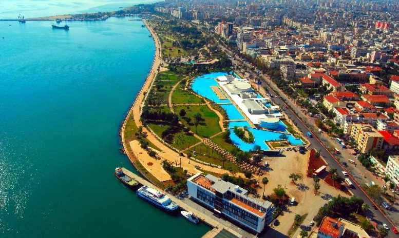
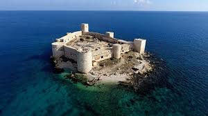

My Home Town, Mersin.
Mersin is a city which is popular with beaches. These beaches has near the the mediterranean sea. The water is generally worm and it is not too salty. That is why people prefer here.

Also, Mersin is an old city and it has lots of historical artifacts.

Mersin has lots of natural beauties.